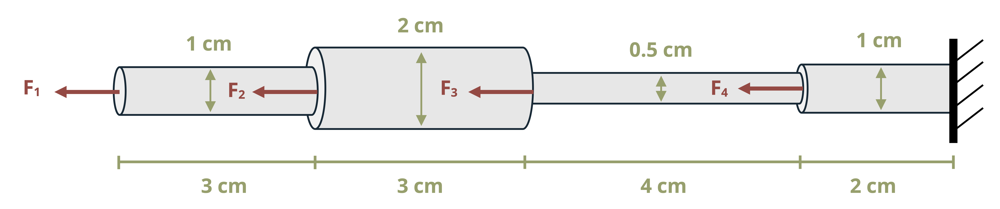

Solution - Problem 5.11

Problem Statement:
A series of solid, steel, circular bars are loaded with forces as shown, where F1 = 3 kN, F2 = 2 kN, F3 = 3 kN, and F4 = 4 kN. What is the total change in length of the system? Assume E = 210 GPa for steel.
Recall the definition of deflection:
\[\delta = \frac{P*L}{E*A}\]
Total deflection is made of the deflection for each of the bars shown. Starting with bar 1:

\[A_1 = \pi*r_1^2\] \[A_1 = \pi*(0.005\,m)^2\] \[A_1 = 7.854*10^{-5}\,m^2\]
Now defining the remaining variables for bar 1:
\[L_1 = 3\,cm = 0.03\,m\] \[E_1 = 200\,GPa\] And solving for deflection 1:
\[\delta_1 = \frac{3000\,N*0.03\,m}{ 200*10^9\,Pa*7.854*10^{-5}\,m^2}\] \[\delta_1 = 0.005736\,mm\]
Now solving for deflection 2 in bar 2. First finding the area:

\[A_2 = \pi*(0.01\,m)^2\] \[A_2 = 3.142*10^{-4}\,m^2\]
Defining remaining variables for bar 2:
\[L_2 = 0.03\,m\] \[E = 200\,GPa\]
And solving for deflection 2:
\[\delta_2 = \frac{(3000\,N+2000\,N)*0.03\,m}{200*10^9\,Pa*3.142*10^{-4} \,m^2}\] \[\delta_2 = 0.002387\,mm\]
Solving next for deflection in the third bar, first by finding the area:

\[A_3 = \pi*(.0025\,m)^2\] \[A_3 = 1.963*10^{-5}\,m^2\] Defining remaning variables for bar 3:
\[L_3 = 0.04\,m\] \[E_3 = 200\,GPa\] Solving for deflection 3:
\[\delta_3 = \frac{(3000\,N+2000\,N+3000\,N)*0.04\,m}{200*10^9\,Pa*1.963*10^{-5} \,m^2}\] \[\delta_3 = 0.08152\,mm\]
Solving next for deflection 4 beginning with finding the area:

\[A_4 = \pi*(0.005\,m)^2\] \[A_4 = 7.854*10^{-5}\,m^2\]
Defining remaining parameters:
\[L_4 = 0.02\,m\] \[E_4 = 200\,GPa\]
Solving for deflection 4:
\[\delta_4 = \frac{(3000\,N+2000\,N+3000\,N+4000\,N)*0.02\,m}{200*10^9\, Pa*7.854*10^{-5}\,m^2}\] \[\delta_4 = 0.015276\,mm\]
To find total deflection, we combine the deflection for each section, that is:
\[\delta_t = \delta_1+\delta_2+\delta_3+\delta_4\]
Therefore:
\[Solution = 0.005736\,mm+0.002387\,mm+0.08152\,mm+0.015276\,mm\] \[Solution = 0.1049\,mm\]
[Solution adapted from © Kurt Gramoll CC BY NC-SA 4.0]